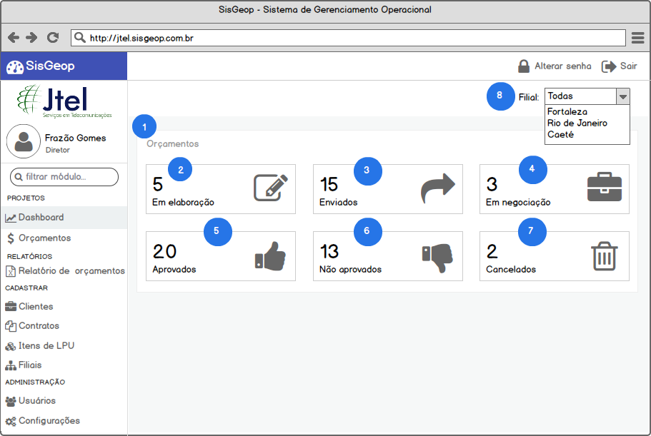

Funcionalidade: Acompanhar Dashboard#
Como usuário com perfil (1. Diretor, 2. Gerente, 3. Coordenador, 4. Supervisor, 5. Financeiro) no SisGeop, eu quero acompanhar as informações quantitativas dos orçamentos por status de acordo com a restrição de Filiais que eu tenho acesso.
Protótipo#

Especificação#
1. INFORMAÇÕES ESTATÍSTICAS DE ORÇAMENTOS#
O painel de informações estatísticas de orçamentos irá agrupar os widgets de informações de orçamentos por status.
2. ORÇAMENTOS EM ELABORAÇÃO#
O widget de Orçamentos em elaboração irá exibir a quantidade de orçamentos em elaboração na JTEL.
QUANDO o usuário clicar no widget
ENTÃO o sistema redireciona o usuário para a tela de gerenciamento de orçamentos
E aplica o filtro para exibição apenas de orçamentos em elaboração
3. ORÇAMENTOS ENVIADOS#
O widget de Orçamentos em enviados irá exibir a quantidade de orçamentos enviados para os clientes da JTEL.
QUANDO o usuário clicar no widget
ENTÃO o sistema redireciona o usuário para a tela de gerenciamento de orçamentos
E aplica o filtro para exibição apenas de orçamentos enviados para clientes
4. ORÇAMENTOS EM NEGOCIAÇÃO#
O widget de Orçamentos em negociação irá exibir a quantidade de orçamentos em negociação com os clientes da JTEL.
QUANDO o usuário clicar no widget
ENTÃO o sistema redireciona o usuário para a tela de gerenciamento de orçamentos
E aplica o filtro para exibição apenas de orçamentos em negociação com os clientes
5. ORÇAMENTOS APROVADOS#
O widget de Orçamentos aprovados irá exibir a quantidade de orçamentos aprovados pelos clientes da JTEL.
QUANDO o usuário clicar no widget
ENTÃO o sistema redireciona o usuário para a tela de gerenciamento de orçamentos
E aplica o filtro para exibição apenas de orçamentos aprovados pelos clientes
6. ORÇAMENTOS NÃO APROVADOS#
O widget de Orçamentos em não aprovados irá exibir a quantidade de orçamentos em não aprovados pelos clientes da JTEL.
QUANDO o usuário clicar no widget
ENTÃO o sistema redireciona o usuário para a tela de gerenciamento de orçamentos
E aplica o filtro para exibição apenas de orçamentos não aprovados pelos clientes
7. ORÇAMENTOS CANCELADOS#
O widget de Orçamentos em elaboração irá exibir a quantidade de orçamentos cancelados na JTEL.
QUANDO o usuário clicar no widget
ENTÃO o sistema redireciona o usuário para a tela de gerenciamento de orçamentos
E aplica o filtro para exibição apenas de orçamentos cancelados
8. FILTRO DE FILIAL#
QUANDO o usuário clicar no campo Filial
ENTÃO o sistema exibe ao usuário apenas as filiais que ele tem acesso
QUANDO o usuário selecionar uma filial específica
ENTÃO o sistema recarrega as informações estatísticas da tela exibindo apenas informações da filial selecionada